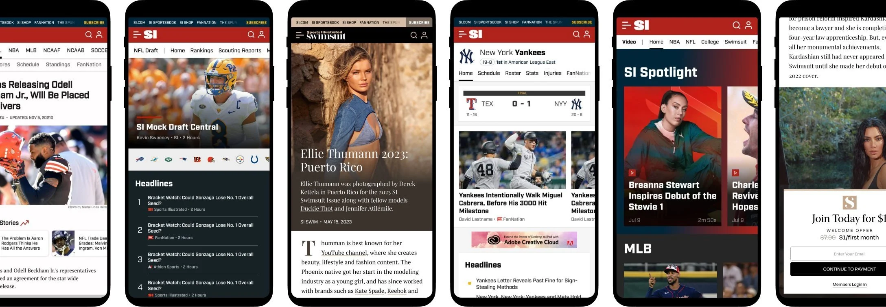
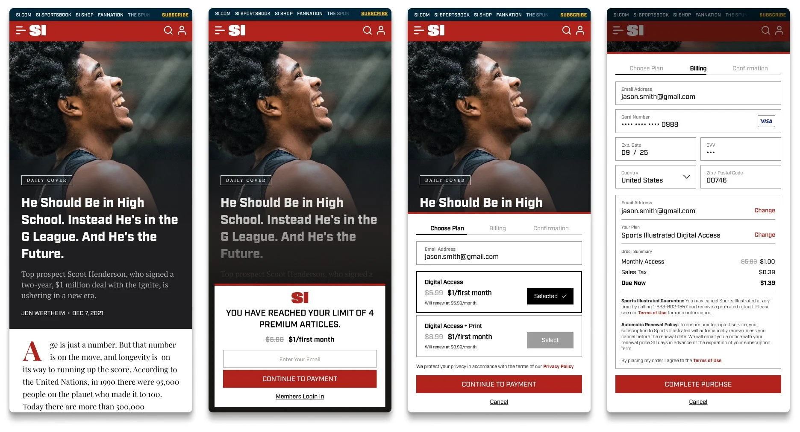
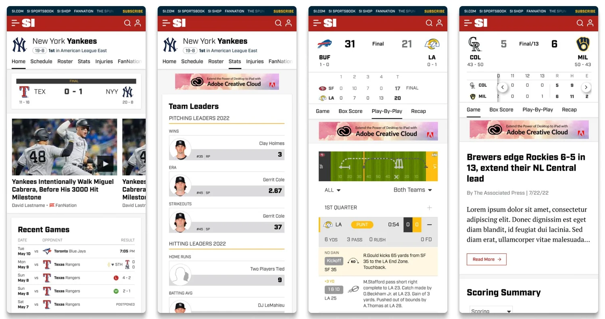
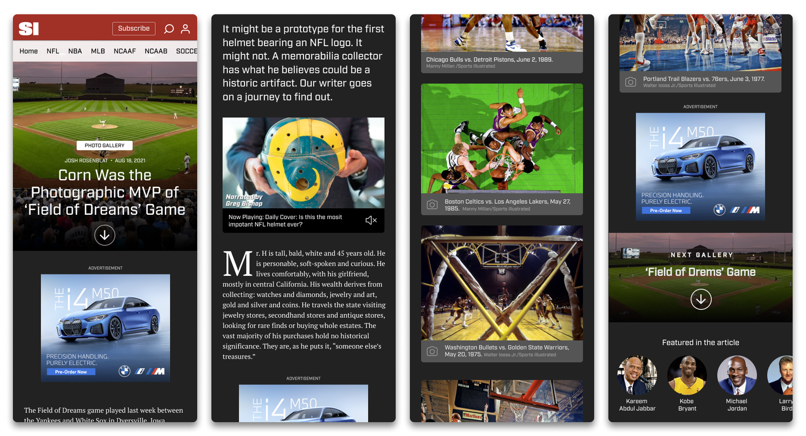
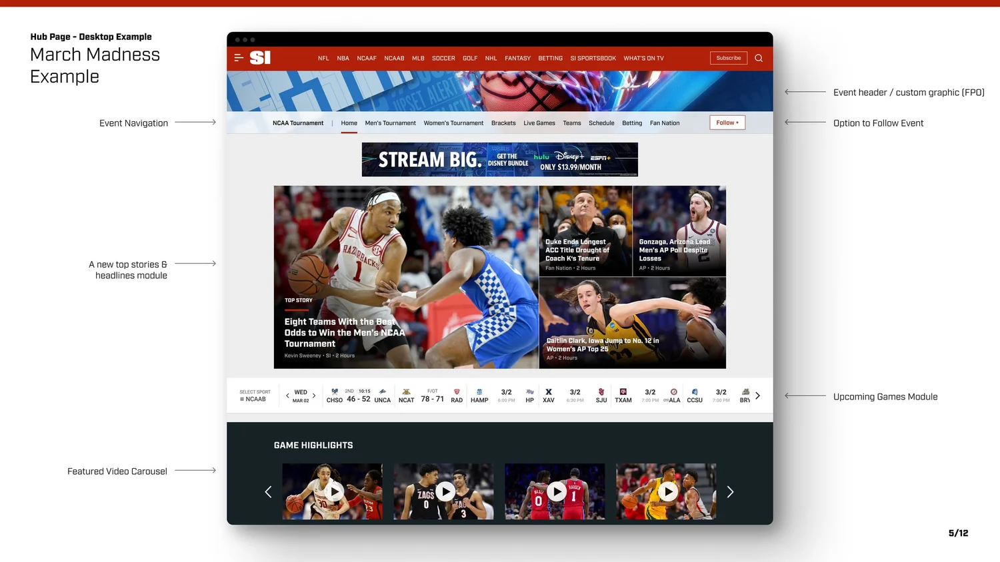
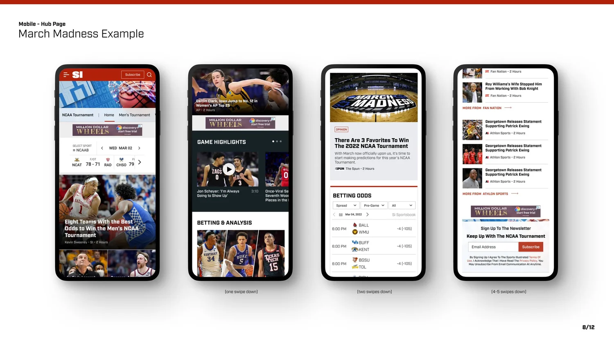

Sports Illustrated
New patterns for Sports Illustrated, carrying editorial, live data, and revenue on the same page.
- Role
- Principal Product Design
- Company
- The Arena Group
- Platform
- Web, mobile first
- Focus
- Templates, monetization, live data

The brief
SI publishes everything from quick news to long-form features, next to betting lines and live scores. The templates had to showcase big photography, carry direct and programmatic ads, and run on the in-house CMS.
Working inside SI's brand guidelines, the new patterns blended the editorial playbook with SEO best practice.
Metered and in-article purchase
A subscription path that lives inside the story, from free reading to a metered offer.

Teams, games, and the article
Team and game pages on Sportradar data, and an article built around the photograph.


Hub pages for tentpole events
One destination per big event, starting with March Madness and the 2022 NFL Draft. The goals:
- A framework for aggregated pages: the Draft, March Madness, the Masters, the NBA Finals, and beyond.
- A measurable audience per event, so sales could package it across the network.
- Clear sourcing for stories from SI, FanNation, and Athlon.
- Better search visibility for the network's coverage.
- A visual language that extends to the homepage and category pages.
- Mobile first, with video up front and configurable modules for editors.
- Follow and sign-up options to bring readers back.

